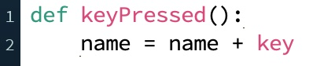

We already know that in Processing, we can detect user actions such as mouse clicks and keys pressed on the keyboard via event handler functions. The thing about computers, though, is that they don’t remember anything unless we explicitly tell them to do so. How do we get our program to remember that a key on the keyboard was pressed? Or better yet, which key was pressed? The answer is that we’ll store that information in a variable.
Let’s say, for example, that we wanted to write an interactive program that allowed the user to type in their name. We can do that by waiting for the user to type on the keyboard and concatenating each character typed onto a string variable. The Processing code would look like this:

Here, we’re making use of another pre-defined variable that Processing provides for us called key. key is just a variable that holds the value of the most recently pressed key on the keyboard. So every time the user presses a key, Processing automatically calls the keyPressed() function, during which we add the key that was pressed to the end of a string variable called name.
Now let’s say that as the user types in their name, we want to be able to show them what they’ve typed. The obvious way to do that is to define the draw() function and display the name using a function call to the text() function. But there’s a problem here: as we just learned in the previous section, variables are only visible to the function that uses them. So draw() won’t know anything about the variable name that we use in the keyPressed() function.
The way to get around this for dealing with user actions is to use the global Python keyword. The global keyword allows us to initialize a variable outside of any function and then make that variable visible to any function that needs to see it. Thus, we could write our program that prints out the user’s name as they type it as follows:
By including the statement global name in both of the function definitions, we are telling these functions that a variable called name exists at a global level, and that they can see and modify this variable.
In general, the global keyword should be used sparingly, since it wreaks havoc with the concept of proper encapsulation for functions. In our Processing programs, we should mostly only use global variables when dealing with event handlers like keyPressed() or mouseClicked(). The global variables allows us to remember what happened as a result of user inputs, and we can then use this information in other functions like draw().